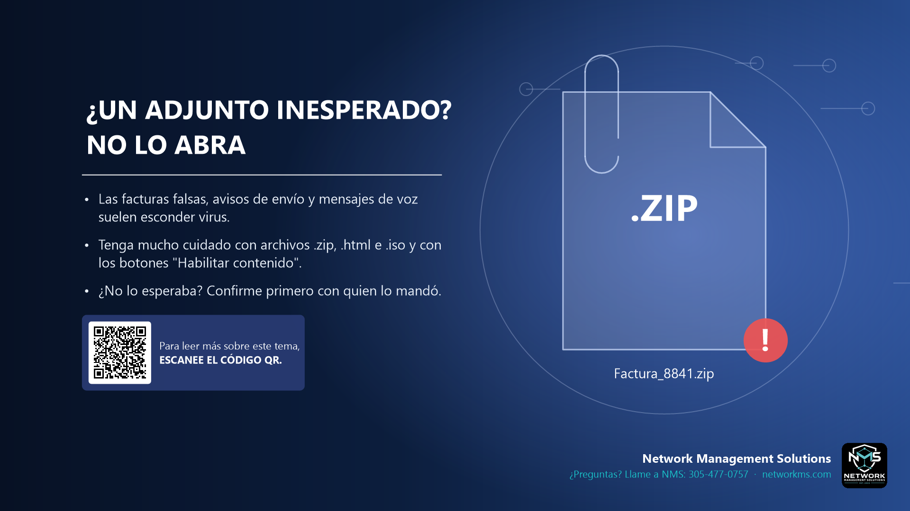

¿Un adjunto inesperado? No lo abra

- Las facturas falsas, avisos de envío y mensajes de voz suelen esconder virus.
- Tenga mucho cuidado con archivos .zip, .html e .iso y con los botones "Habilitar contenido".
- ¿No lo esperaba? Confirme primero con quien lo mandó.
Los atacantes mandan archivos que parecen facturas, órdenes de compra, documentos escaneados, mensajes de voz o etiquetas de envío. Abrirlos puede instalar virus o ransomware.
Archivos de mayor riesgo: .zip, .iso, .html o .htm, .js, .exe, y documentos de Office que piden "Habilitar contenido" o "Habilitar edición".
Si no esperaba el archivo, confirme con el remitente por teléfono o en un mensaje nuevo antes de abrirlo.
¿Tiene dudas sobre un correo, mensaje o llamada? Llame a NMS antes de hacer clic: 305-477-0757 · networkms.com